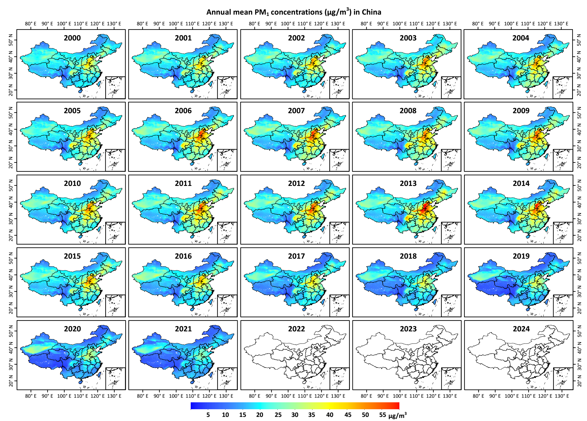
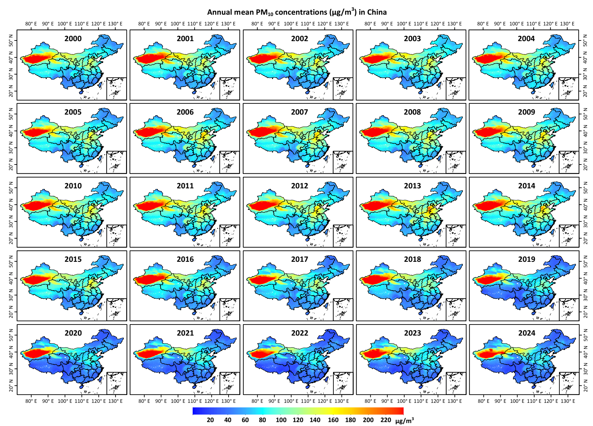
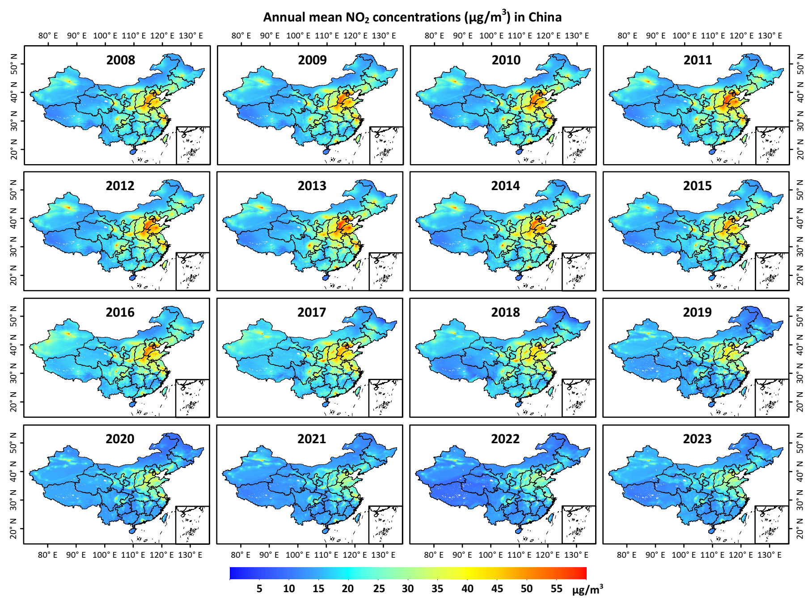
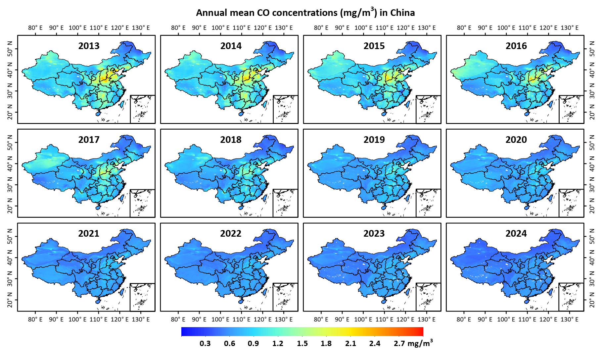

ChinaHighAirPollutants (CHAP)
New update: Hourly 5 km PM2.5 product released!
Brief Introduction
The ChinaHighAirPollutants (CHAP) dataset refers to the long-term, full-coverage, high-resolution, and high-quality near-surface air pollutants in China. It considered the spatiotemporal heterogeneity of air pollution, and generated using the satellite remote sensing, artificial intelligence, and big data, e.g., ground-based measurements, remote sensing products, atmospheric reanalysis, and model simulations. This dataset contains 7 major air pollutants (i.e., PM1, PM2.5, PM10, O3, NO2, SO2, and CO). More importantly, the atmospheric component dataset will be soon released. This dataset is public and freely open to all users!
Dataset summary

ChinaHighPM2.5 dataset
[1] MODIS/Terra+Aqua: China, 1 km, 2000-2020 (Version 3)
Level 2 Daily product (2013-2020): http://doi.org/10.5281/zenodo.4959828
Level 3 Yearly product (2000-2020): http://doi.org/10.5281/zenodo.4660858
Reference:
Wei, J., Li, Z., Lyapustin, A., Sun, L., Peng, Y., Xue, W., Su, T., and Cribb, M. Reconstructing 1-km-resolution high-quality PM2.5 data records from 2000 to 2018 in China: spatiotemporal variations and policy implications. Remote Sensing of Environment, 2021, 252, 112136. https://doi.org/10.1016/j.rse.2020.112136
Wei, J., Li, Z., Cribb, M., Huang, W., Xue, W., Sun, L., Guo, J., Peng, Y., Li, J., Lyapustin, A., Liu, L., Wu, H., and Song, Y. Improved 1 km resolution PM2.5 estimates across China using enhanced space-time extremely randomized trees. Atmospheric Chemistry and Physics, 2020, 20, 3273–3289. https://doi.org/10.5194/acp-20-3273-2020
[2] Himawari-8: China, 5 km, Hourly, 2018 (Version 1)
Data Link: http://doi.org/10.5281/zenodo.4784813
Reference: Wei, J., Li, Z., Pinker, R., Wang, J., Sun, L., Xue, W., Li, R., and Cribb, M. Himawari-8-derived diurnal variations of ground-level PM2.5 pollution across China using a fast space-time Light Gradient Boosting Machine (LightGBM). Atmospheric Chemistry and Physics, 2021, 21, 7863–7880. https://doi.org/10.5194/acp-21-7863-2021
[3 Big data: China, 10 km, Full coverage, Yearly/Monthly/Daily, 2013-2020 (Version 1)
Data Link: https://doi.org/10.5281/zenodo.4641555
Reference: Wei, J., et al. In preparation.
[4] VIIRS: China, Yearly/Monthly/Daily, 2013-2018 (Version 1)
Data Link: https://doi.org/10.5281/zenodo.4458866
Reference: Wei, J., Li, Z., Sun, L., Xue, X., Ma, Z., Liu, L., Fan, T., and Cribb, M. Extending the EOS long-term PM2.5 data records since 2013 in China: application to the VIIRS Deep Blue aerosol products. IEEE Transactions on Geoscience and Remote Sensing, 2021. https://doi.org/10.1109/TGRS.2021.3050999
[5] MODIS/Terra+Aqua: Beijing-Tianjin-Hebei region, 1 km, Monthly, 2000-2018 (Version 1)
Data Link: http://doi.org/10.5281/zenodo.3987359
Reference: Xue, W., Zhang, J., Zhong, C., Li, X., and Wei, J. Spatiotemporal PM2.5 variations and its response to the industrial structure from 2000 to 2018 in the Beijing-Tianjin-Hebei region. Journal of Cleaner Production, 2021, 279, 123742. https://doi.org/10.1016/j.jclepro.2020.123742

ChinaHighPM1 dataset
[1] MODIS/Terra+Aqua: China, 1 km, Yearly/Monthly/Daily, 2014-2020 (Version 2)
Data Link: https://doi.org/10.5281/zenodo.3758510
Reference: Wei, J., Li, Z., Guo, J., Sun, L., Huang, W., Xue, W., Fan, T, and Cribb, M. Satellite-derived 1-km-resolution PM1 concentrations from 2014 to 2018 across China. Environmental Science & Technology, 2019, 53(22), 13265-13274. https://doi.org/10.1021/acs.est.9b03258
[2] Big data: China, 10 km, Full coverage, Yearly/Monthly/Daily, 2013-2020 (Version 1)
Data Link: https://doi.org/10.5281/zenodo.4641561
Reference: Wei, J., et al. In preparation.
ChinaHighPM10 dataset
[1] MODIS/Terra+Aqua: China, 1 km, 2013-2020 (Version 3)
Level 2 Daily product (2013-2020): http://doi.org/10.5281/zenodo.5090006
Level 3 Yearly product (2013-2020): http://doi.org/10.5281/zenodo.5089979
Reference: Wei, J., Li, Z., Xue, W., Sun, L., Fan, T., Liu, L., Su, T., and Cribb, M. The ChinaHighPM10 dataset: generation, validation, and spatiotemporal variations from 2013 to 2019 across China. Environment International, 2021, 146, 106290. https://doi.org/10.1016/j.envint.2020.106290
[2] Big data: China, 10 km, Full coverage, Yearly/Monthly/Daily, 2013-2020 (Version 1)
Data Link: https://doi.org/10.5281/zenodo.4641551
Reference: Wei, J., et al. In preparation.
ChinaHighO3 dataset
[1] Big data: China, Full coverage, 10 km, Yearly/Monthly/Daily, 2013-2020 (Version 1)
Data Link: https://doi.org/10.5281/zenodo.4400043
Reference: Wei, J., Li, Z., Li, K., Dickerson, R., Pinker, R., Wang, J., Liu, X., Sun, L., Xue, W., and Cribb, M. Full-coverage mapping and spatiotemporal variations of ground-level ozone (O3) pollution from 2013 to 2020 across China. [preprint], 2021. https://doi.org/10.1002/essoar.10507721.1
[2] OMI, 25 km, Yearly/Monthly/Daily, 2005-2019 (Version 1)
Data Link: https://doi.org/10.5281/zenodo.3988420
Reference: Wei, J., et al. In preparation.

ChinaHighNO2 dataset
[1] TROPOMI: China, Full coverage, 5 km, Yearly/Monthly/Daily, 2019 (Version 1)
Data Link: https://doi.org/10.5281/zenodo.4571661
Reference: Wei, J., et al. Under review.
[2] Big data: China, 10 km, Full coverage, Yearly/Monthly/Daily, 2013-2020 (Version 1)
Data Link: https://doi.org/10.5281/zenodo.4641543
Reference: Wei, J., et al. In preparation.
[3] OMI, 25 km, Yearly/Monthly/Daily, 2005-2019 (Version 1)
Data Link: https://doi.org/10.5281/zenodo.3988349
Reference: Wei, J., et al. In preparation.
ChinaHighSO2 dataset
Big data: China, 10 km, Full coverage, Yearly/Monthly/Daily, 2013-2020 (Version 1)
Data Link: https://doi.org/10.5281/zenodo.4641539
Reference: Wei, J., et al. In preparation.

ChinaHighCO dataset
Big data: China, 10 km, Full coverage, Yearly/Monthly/Daily, 2013-2020 (Version 1)
Data Link: https://doi.org/10.5281/zenodo.4641531
Reference: Wei, J., et al. In preparation.
Dataset tools
Data conversion (from nc to GeoTIFF or img): [1] Python code; [2] IDL code
News/reports on our dataset
University of Maryland: Li and Wei Published on Air Pollution in China
Beijing Normal University: Dr. Jing Wei released the high-resolution and high-quality air pollution dataset in China
Publications using our dataset (18)
Zhang, Y., Wei, J., Shi, Y., Quan, C., Ho, H., Song, Y., and Zhang, L. Effects of early-life exposure to submicron particulate air pollution on asthma development in Chinese preschool children. Journal of Allergy and Clinical Immunology, 2021. https://doi.org/10.1016/j.jaci.2021.02.030 (SCI, IF = 10.793, TOP)
Xu, H., Guo, B., Qian, W., Ciren, Z., Guo, W., Zeng, Q., Mao, D., Xiao, X., Wu, J., Wang, X., Wei, J., Chen, G., Li, S., Guo, Y., Meng, Q., and Zhao, X. Dietary pattern and long-term effects of particulate matter on blood pressure: a large cross-sectional study in Chinese adults. Hypertension, 2021, 78, 184–194. https://doi.org/10.1161/HYPERTENSIONAHA.121.17205 (SCI, IF = 10.19, TOP)
Xue, W., Zhang, J., Zhong, C., Li, X., and Wei, J. Spatiotemporal PM2.5 variations and its response to the industrial structure from 2000 to 2018 in the Beijing-Tianjin-Hebei region. Journal of Cleaner Production, 2021, 279, 123742. https://doi.org/10.1016/j.jclepro.2020.123742 (SCI, IF = 9.297, TOP)
Wang, H., Yin, P., Fan, W., Wang, Y., Dong, Z., Deng, Q., and Zhou, M. Mortality risk associated with short-term exposure to particulate matter in China: estimating error and implication. Environmental Science & Technology, 2021, 55(2), 1110–1121. https://doi.org/10.1021/acs.est.0c05095 (SCI, IF = 9.028, TOP)
Geng, G., Xiao, Q., Liu, S., Liu, X., Cheng, J., Zheng, Y., Xue, T., Tong, D., Zheng, B., Peng, Y., Huang, X., He, K., and Zhang, Q. Tracking Air Pollution in China: Near Real-Time PM2.5 Retrievals from Multisource Data Fusion. Environmental Science & Technology, 2021, 55(17), 12106-12115. https://doi.org/10.1021/acs.est.1c01863 (SCI, IF = 9.028, TOP)
Jiang, Y., Chen, S., Hu, B., Zhou, Y., Liang, Z., Jiao, X., Huang, M., Wei, J., and Shi, Z. A comprehensive framework for assessing the impact of potential agricultural pollution on grain security and human health in economically developed areas. Environmental Pollution, 2020, 263, 114653. https://doi.org/10.1016/j.envpol.2020.114653 (SCI, IF = 8.071, TOP)
Wang, C., Wang, Y., Shi, Z., Sun, J., Gong, K., Li, J., Qin, M., Wei, J., Li, T., Kan, H., and Hu, J. Effects of using different exposure data to estimate changes in premature mortality attributable to PM2.5 and O3 in China. Environmental Pollution, 2021, 285, 117242. https://doi.org/10.1016/j.envpol.2021.117242 (SCI, IF = 8.071, TOP)
Guo, H., Wei, J., Li, X., Ho, C., Song, Y., Wu, J., and Li, W. Do socioeconomic factors modify the effects of PM1 and SO2 on lung cancer incidence in China? Science of the Total Environment, 2021, 756, 143998. https://doi.org/10.1016/j.scitotenv.2020.143998 (SCI, IF = 7.963, TOP)
Wang, X., Xu, Z., Ho, H., Song, Y., Zheng, H., Hossain, M., Khan, M., Bogale, D., Wei, J., and Cheng, J. Ambient particular matters (PM1, PM2.5, PM10) and childhood pneumonia: the smaller particle, the greater short-term impact? Science of the Total Environment, 2021, 772, 145509. https://doi.org/10.1016/j.scitotenv.2021.145509 (SCI, IF = 7.963, TOP)
Xu, J., Zhou, J., Luo, P., Mao, D., Xu, W., Nima, Q., Cui, C., Yang, S., Ao, L., Wu, J., Wei, J., Chen, G., Li, S., Guo, Y., Zhang, J., Liu, Z., and Zhao, X. Associations of long-term exposure to ambient air pollution and physical activity with insomnia in Chinese adults. Science of the Total Environment, 2021, 792, 148197. https://doi.org/10.1016/j.scitotenv.2021.148197 (SCI, IF = 7.963, TOP)
Liu, M., Tang, W., Zhang, Y., Wang, Y., kangzhuo, B., Li, Y., Liu, X., Xu, S., Ao, L., Wang, Q., Wei, J., Chen, G., Li, S., Guo, Y., Yang, S., Han, D., and Zhao, X. Urban-rural differences in the association between long-term exposure to ambient air pollution and obesity in China. Environmental Research, 2021, 201, 111597. https://doi.org/10.1016/j.envres.2021.111597 (SCI, IF = 6.498, TOP)
Wang, L., Chen, G., Pan, Y., Xia, J., Chen, L., Zhang , X., Silang, Y., Chen, J., Xu, H., Zeng, C., Wei, J., Li, S., Guo, Y., Yang, S., Hong, F., and Zhao, X. Association of long-term exposure to ambient air pollutants with blood lipids in Chinese adults: The China Multi-Ethnic Cohort Study. Environmental Research, 2021, 197, 111174. https://doi.org/10.1016/j.envres.2021.111174 (SCI, IF = 6.498, TOP)
Wu, J., Guo, B., Guan, H., Mi, F., Xu, J., Basang, Li, Y., Zuo, H., Wang, L., Feng, S., Wei, J., Cheng, G., Li, S., Wei, Y., Guo, Y., and Zhao, X. The association between long-term exposure to ambient air pollution and bone strength in China. Journal of Clinical Endocrinology & Metabolism, 2021, dgab462. https://doi.org/10.1210/clinem/dgab462 (SCI, IF = 5.958, TOP)
Shi, H., Zhang, J., Zhao, B., Xia, X., Hu, B., Li, X., Wei, J., Liu, M., Bian, Y., Fu, D., Gu, Y., and Liou, K. Surface brightening in eastern and central China since the implementation of the Clean Air Action in 2013: causes and implications. Geophysical Research Letters, 2021, 48(3), e2020GL091105. https://doi.org/10.1029/2020GL091105 (SCI, IF = 4.720, TOP)
Zheng, H., Yi, W., Ding, Z., Xu, Z., Ho, H., Cheng, J., Hossain, M., Song, J., Fan, Y., Ni, J., Wang, Q., Xu, Y., Wei, J., Su, H. Evaluation of life expectancy loss associated with submicron and fine particulate matter (PM1 and PM2.5) air pollution in Nanjing, China. Environmental Science and Pollution Research, 2021. https://doi.org/10.1007/s11356-021-15244-z (SCI, IF = 4.223)
Guo, H., Liu, J., and Wei, J. Ambient ozone, PM1 and female lung cancer incidence in 436 Chinese counties. International Journal of Environmental Research and Public Health, 2021, 18(19), 10386. https://doi.org/10.3390/ijerph181910386 (SCI, IF = 3.390)
Guo, H., Li, X., Li, W., Wu, J., and Wei, J. Climatic modification effects on the association between PM1 and lung cancer incidence in China. BMC Public Health, 2021, 21, 880. https://doi.org/10.1186/s12889-021-10912-8 (SCI, IF = 3.295)
魏海涛, 刘岩, 田智慧, 王晓蕾, 郝晓慧, 韦 晶. 河南省肺癌时空分布特征及环境因素影响研究. 地理学报, 2021.
Other related air pollution datasets
[1] Global monthly merged Satellite-AERONET AOD product, Peking University (Dr. Jing Li)
[2] Tracking Air Pollution in China (TAP), Tsinghua University (Dr. Qiang Zhang and Dr. Guannan Geng)
[3] PM2.5 Hindcast Database (PHD), Peking University (Dr. Tao Xue)
-------------------------------------------------------------
Welcome to use the CHAP dataset for related scientific research! Note that this dataset is continuously updated, and if you need longer-period or higher temporal-resolution (e.g., hourly, daily or monthly) data, please contact me (weijing_rs@163.com; weijing.rs@gmail.com).
-------------------------------------------------------------